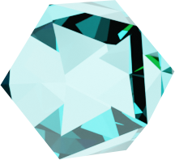

In ancient times, people believed aquamarine, the traditional birthstone of March, protected seafarers in helping them clearly remember their loved ones when they were far away at sea. Wearing aquamarine promotes creativity, hope, self-expression and courage. Wear this gemstone to boost love, youth, good health and overall happiness.
